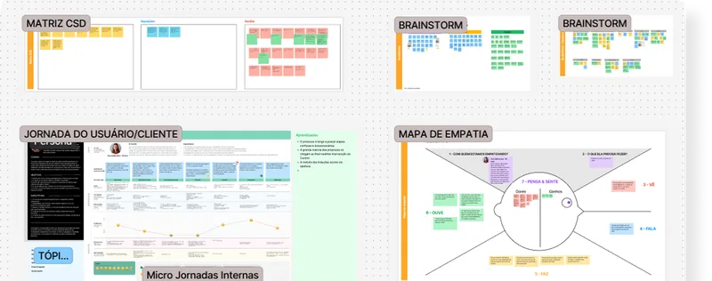
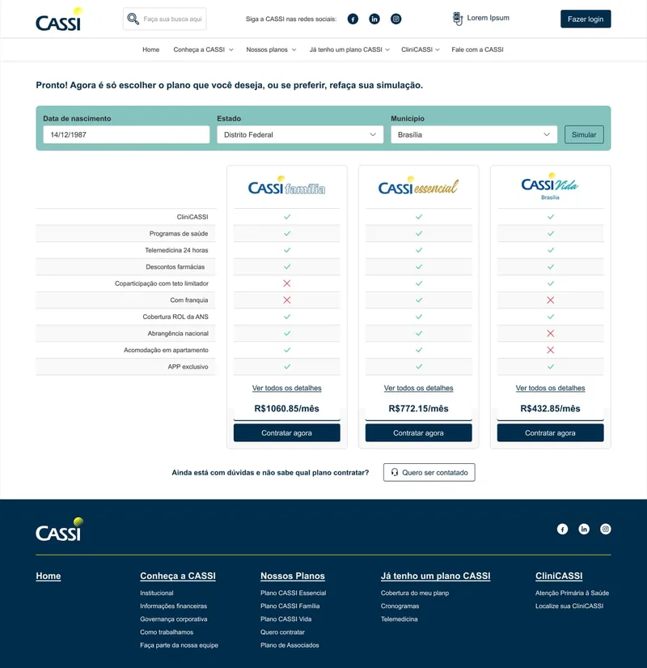
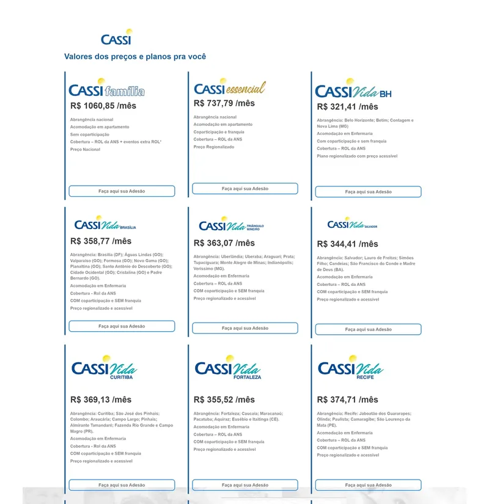
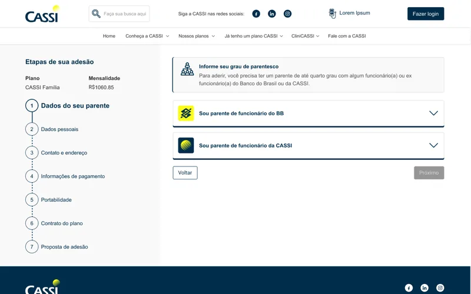
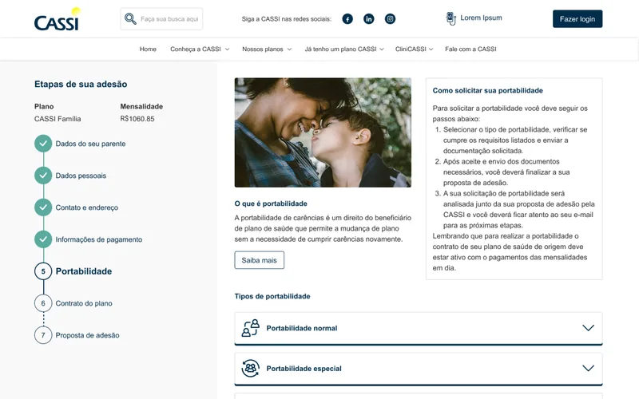
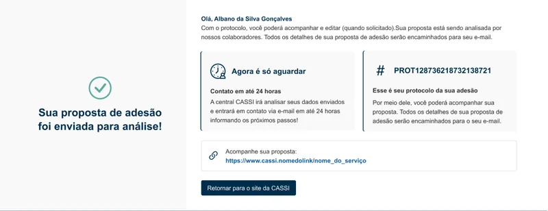

Enrollment Journey
Redesigning plan exploration, document submission, and status tracking. Proposal volume grew 171% from January 2023 to January 2024.
The case in five words
- Problem Pre-registration, scattered document steps, and no visible status kept users dependent on the call center.
- Decision Plan exploration moved ahead of registration, so users could review their options before creating an account.
- Decision Steps were reordered around users: explore plans, simulate costs, choose, enter details, submit documents, track status.
- Trade-off A CPF or protocol plus an SMS or email code replaced the mandatory account: a lighter check, but no barrier up front.
- Result More proposals: 408 in January 2023 to 1,105 in January 2024, after the March 2023 launch.
A fragmented journey, dependent on support.
The enrollment journey for relatives of Banco do Brasil associates was difficult to navigate. Barriers to exploring plans, fragmented document submission, and limited status visibility made it hard to progress independently:
- Mandatory pre-registration required an account before users could explore plans or understand which documents they would need.
- Documents were submitted across several steps with call center validation, adding handoffs and rework to the process.
- Without a visible proposal status, users had to contact the call center to find out where they stood.
From discovery to the redesigned journey.
I led discovery activities including journey mapping and interviews with users and internal teams. I defined final flows and reviewed business rules with IT, the call center, and business areas. I built the future journey as a high-fidelity prototype in Figma using variables to test multiple scenarios, and followed the full UX to UI cycle through handoff.
Organizing discovery.
The board brings together a CSD matrix, brainstorming areas, a user/customer journey, and an empathy map. It offers an overview of how discovery material was organized.

Helping users progress with less support.
Remove mandatory pre-registration
Users had to create an account before they could understand the available plans or required documents. We moved plan exploration ahead of registration so they could review their options before committing to the process.
The old pre-registration login wasn't even reused: applicants had to create another account once enrollment was complete. Instead, returning applicants identify themselves with their CPF or proposal protocol plus a confirmation code sent by SMS or email.
Explore plans before creating an account.
From plan cards to aligned benefits.
The earlier screen presents plans as separate cards. The redesigned screen aligns plan benefits in a comparison table, with shared rows across the displayed plans.
Drag the divider or use the arrow keys to compare. Home shows After; End shows Before.


Reorganize steps around the user's mental model
The original flow followed the system's internal requirements. We reorganized it into a sequence users could follow: explore plans, simulate costs, choose a plan, enter personal details, submit documents, and track the proposal's status.
A clear sequence from plan exploration to status tracking.
Eligibility within the journey
The eligibility guidance sits beside a seven-step sequence, keeping the current stage and the remaining journey in view.

Personal details and document preparation
The applicant's personal details are grouped with guidance on preparing a copy of their identification document, while the sidebar marks personal details as the current stage.
Portability as a specific situation
For applicants bringing waiting periods already served under another health plan, this view introduces portability and groups its categories beside an explanation of how to request it.

Structured status visibility throughout
Users contacted the call center to check their proposal's progress. We added structured status messages and notifications to explain the current stage and what comes next, with the aim of reducing the need to call for updates.
See the proposal's progress and next steps.
Submitted for analysis, with a reference for what comes next
The confirmation says the proposal was submitted for analysis. A protocol number gives the applicant a reference, alongside instructions to wait for contact about the next steps.

Proposal volume grew 171% year over year.
The redesigned journey launched in March 2023. Proposal volume rose from 408 in January 2023 to 1,105 in January 2024, a rounded increase of 171%. These figures count proposals, not completed enrollments, and do not isolate the redesign's contribution to that growth.
171%
more proposals: Jan 2023 vs Jan 2024
408 → 1,105
proposals Jan 2023 vs Jan 2024
Mar 2023
redesigned version launched
Try the journey yourself.
This is the redesigned enrollment journey running in production on CASSI's website. Explore plans, run price simulations, and move through the steps as much as you like. Stop before the final submission: a submitted proposal goes to CASSI for real analysis.
Open contrate.cassi.com.br ↗